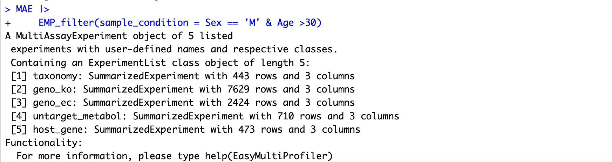
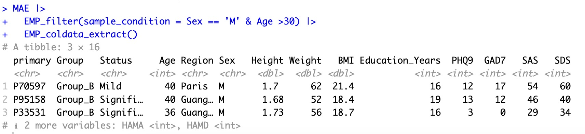
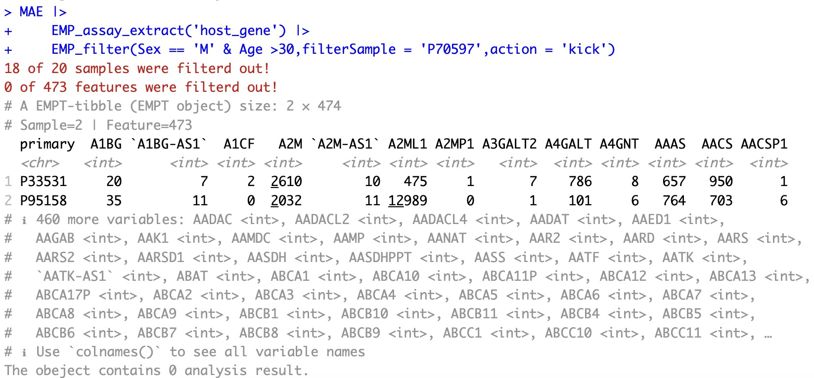
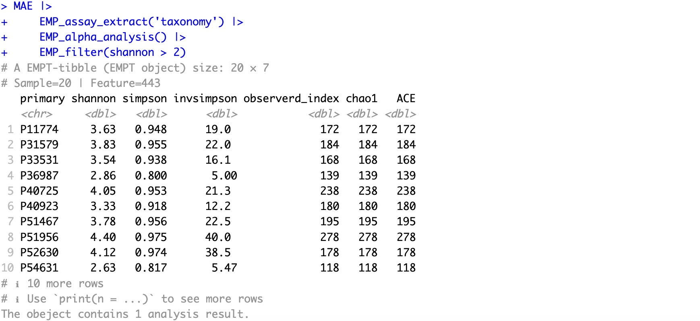
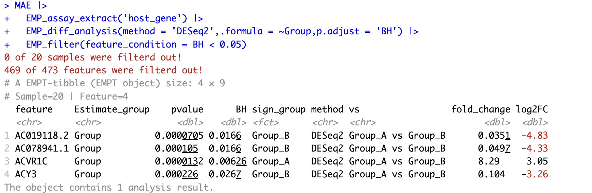
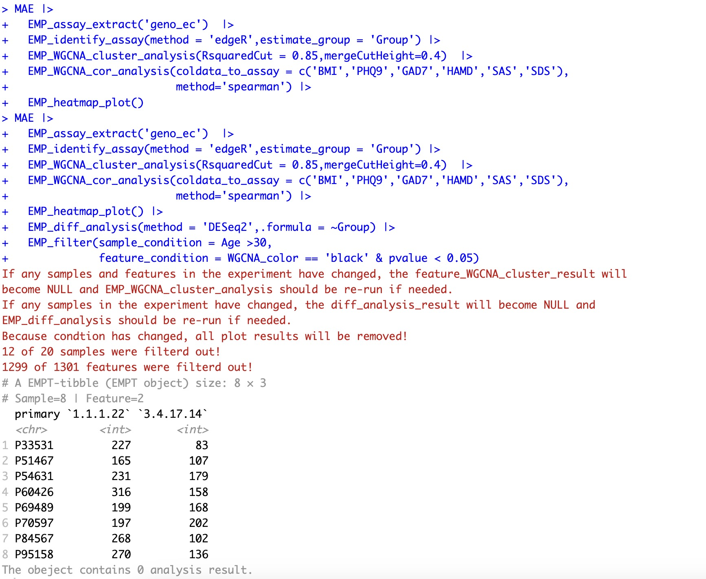

7.1 数据筛选 EMP_filter
本模块有着强大的功能，不仅可以根据数据的rowdata和coldata对特征和样本进行筛选规律，还可以根据当前分析中已经完成的结果对数据进行筛选。
EMP_filter的基本参数：
- obj ： 选择组学名称，可以直接对接
MAE对象进行操作 - experiment ： 选择组学名称，可以直接对接
MAE对象进行操作 - sample_condition：设定选择样本的阈值条件
- feature_condition: 设定选择特征的阈值条件
- filterSample: 直接设定样本的名称
- filterFeature: 直接设定特征的名称
- action: 与
filterSample和filterFeature联用，设定kick和select - show_info: 设定输出结果的展现方式
7.1.1 针对整个队列全组学数据进行过滤筛选
🏷️示例1：
在全部组学中筛选满足年龄大于30岁的男性受试者。
MAE |>
EMP_filter(sample_condition = Sex == 'M' & Age >30)

筛选完成后，MAE数据容器中只存在满足条件的样本，可以直接使用其他分析模块进行下游分析。例如可以使用EMP_coldata_extract观察过滤后样本情况。
MAE |>
EMP_filter(sample_condition = Sex == 'M' & Age >30) |>
EMP_coldata_extract()

🏷️示例2：
筛选出表型数据中没有缺失值的样本
EMP_filter继承了dplyr包的filter函数语法，因此可以使用tidy语法进行样本筛选。
MAE |>
EMP_filter(sample_condition = if_all(everything(),~ !is.na(.)))
筛选出表型数据中PHQ9和GAD7至少有一个大于5分的样本
MAE |>
EMP_filter(sample_condition = if_all(c(PHQ9,GAD7),~. > 5))
7.1.2 针对单组学数据及分析结果进行过滤筛选
🏷️示例1：根据原有数据进行筛选样本
从MAE容器中提取宿主转录组组学结果，筛选出全部的男性样本，并将其中的P70597样本剔除。
MAE |>
EMP_assay_extract('host_gene') |>
EMP_filter(Sex == 'M' & Age >30,filterSample = 'P70597',action = 'kick')

🏷️示例2：根据数据分析结果筛选样本
本模块可以根据分析结果进行过滤样本和特征。从MAE容器中提取微生物组学数据，并进行alpha多样性分析，筛选满足特定条件的样本。
MAE |>
EMP_assay_extract('taxonomy') |>
EMP_alpha_analysis() |>
EMP_filter(shannon > 2)

🏷️示例3：根据数据分析结果筛选特征
从MAE容器中提取宿主转录组学数据进行差异分析，并筛选出校正P值小于0.05的特征。
MAE |>
EMP_assay_extract('host_gene') |>
EMP_diff_analysis(method = 'DESeq2',.formula = ~Group,p.adjust = 'BH') |>
EMP_filter(feature_condition = BH < 0.05)

🏷️示例4：多次多条件筛选样本或特征
从MAE容器中提取EC酶注释结果进行WGCNA关联分析并进行DESeq2差异分析, 筛选出以下条件的数据:
- 年龄大于30岁的样本
- WGCNA关联分析中与BMI密切相关的黑色模块聚类内的特征
- 差异分析中p值小于0.05的特征
MAE |>
EMP_assay_extract('geno_ec') |>
EMP_identify_assay(method = 'edgeR',estimate_group = 'Group') |>
EMP_WGCNA_cluster_analysis(RsquaredCut = 0.85,mergeCutHeight=0.4) |>
EMP_WGCNA_cor_analysis(coldata_to_assay = c('BMI','PHQ9','GAD7','HAMD','SAS','SDS'),
method='spearman') |>
EMP_heatmap_plot() |> # This step could help find the interesting module
EMP_diff_analysis(method = 'DESeq2',.formula = ~Group) |>
EMP_filter(sample_condition = Age >30,
feature_condition = WGCNA_color == 'black' & pvalue < 0.05)

7.1.3 关于过滤后数据分析结果的清除问题
在EasyMultiProfiler包的分析流程中，分析结果会自动存储在数据容器中，供EMP_filter模块用于样本和特征的筛选。然而，一旦筛选完成，之前存储的结果可能不再适用，因此会在筛选后自动清除。例如，假设容器中存储了差异分析和多样性分析的结果，用户根据BMI值剔除了一些样本。在这种情况下，原有的差异分析结果将会自动清除，因为它们已经不再有效。而alpha多样性的结果则不受剔除样本的影响，会继续保存在容器中，以便下一次筛选使用。EasyMultiProfiler包已经实现了自动化处理这一过程，并会以红色文字提醒用户在清除受影响结果时的操作。
7.1.4 关于过滤后数据显示问题
在EasyMultiProfiler包的分析流程中，使用EMP_filter筛选后，默认会继承前一个分析模块的显示效果。例如，如果前一个模块是进行了alpha多样性计算。当使用EMP_filter根据Age>30条件进行筛选时，由于样本的变化不会影响到原先的alpha多样性结果，因此EMP_filter的输出将会继续显示上一个模块中经过筛选的结果，即EMP_alpha_analysis的筛选结果。如果前一个模块因为样本或特征的改变而被清除（详见7.1.3的说明），则会直接显示当前数据集assay的情况。